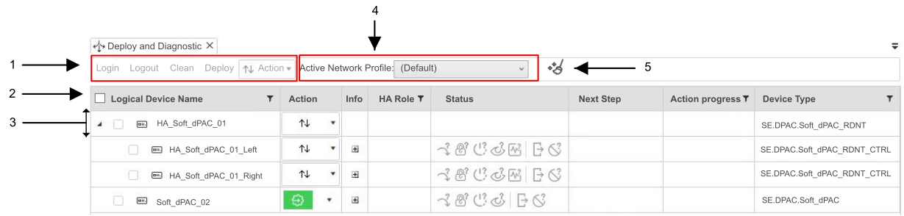

Deploy and Diagnostic Editor
Description
Deploy and Diagnostic is an editor available in EcoStruxure Automation Expert that is used to:
-
Deploy: When there are changes on an application, this editor is used to deploy these changes on the wanted devices.
The deployment process is available in the topic Deploy to Run Device
-
Diagnose: When status of the devices need to be controlled, this editor is used to give diagnostics on them.
All the status available are listed in the topic Status.
Access this editor by either:
-
Clicking on the Deploy and Diagnostic icon
 on the quick access toolbar.
on the quick access toolbar.
-
Opening the editor by following this path: .
Overview
The following graphic is giving an overview of the Deploy and Diagnostic editor:

-
In this area are available the common buttons used to perform actions to the selected logical device instances. If none is selected, these common buttons remains disabled.
NOTE: The actions available are listed in the topic Actions. -
This button selects all the devices available. Once selected, actions can be performed on them with the actions' buttons described above.
-
In this line is listed all information, status and actions available for one specific logical device instance. Each logical device instance gets its own line.
NOTE: The list of all information, status and actions available are listed in the section Logical Device Instance Information. -
The Active Network Profile setting determines how the solution will operate:
-
Default: Indicates the solution will operate with real devices. This setting is disabled when a Trial license is used in EcoStruxure Automation Expert, as described in the chapter EcoStruxure Automation Expert Licenses. An Engineering license is needed to have access to this setting.
-
Local Test Indicates the solution will operate in simulation mode (refer to the HMI -User Guide topic Simulation Runtime).
NOTE: For high availability solutions, use this setting for the limited purpose of testing application logic on one HA Partner at a time.
-
-
Clean Snapshots command: Deletes the files created by a previous Compile action and the related Build binary files used in the Compile action.
Logical Device Instance Information
As mentioned in the overview, the following information, status and actions are available for each logical device instance available in the Deploy and Diagnostic editor:
-
Logical Device Name: Gives the name of the device, its IP address and Logical Port.
-
Action: Gives access to the actions to control and deploy to run this specific logical device instance. To use these actions to:
-
This specific logical device instance, check the topic Deploy to Run Device.
-
A group of logical device instance, either select them all with the general button mentioned above or individually with the button located to the left of the Logical Device Name. Once all the logical device instances wanted selected, use the common buttons to perform on them actions.
NOTE: For high availability systems, the execution of any single command at HA Partner level will kick out its paired HA Partner. If the command is not successful, complete loss of process control may result. -
-
Info: Display extra information about the device, its MIBs and their diagnostic as described in the topic Device Information.
-
HA Role: Displays the role of a high availability controller. Refer to The HA Soft dPAC User Guide topic High Availability States and Roles
-
Status: Displays the current status of the device through icons. Check the signification of these icons with the topic Status.
-
Next Step: Informs about the possible next steps or next actions that can be formed on the logical device instance. The some values are:
-
Needs compile
-
Deploy necessary
-
-
Action progress: Presents either an action in progress or the result of an action. Examples of values are:
-
Deploy successfully finished
-
Starting device successfully finished
-
Set running project as boot project successfully finished
-
-
Device Type: Informs about the device type from the SE.DPAC library that was used to create the logical device instance.